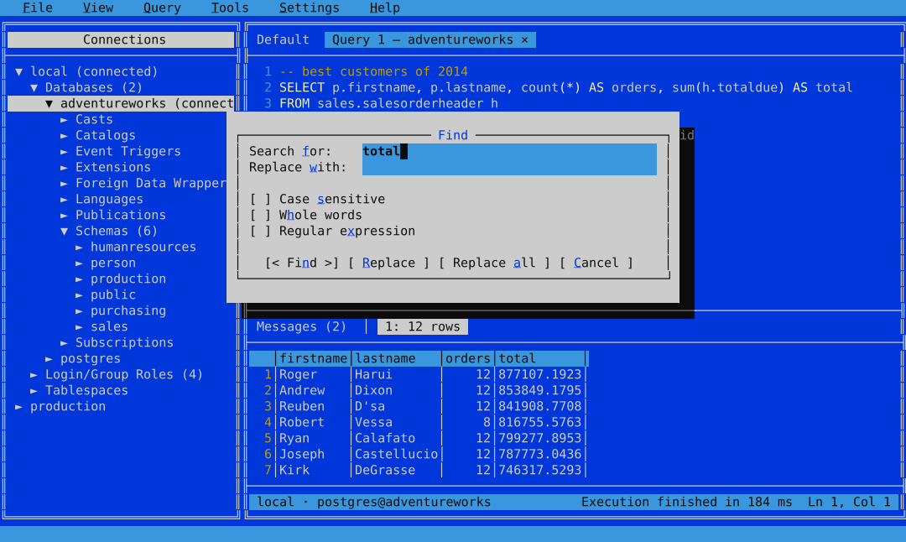
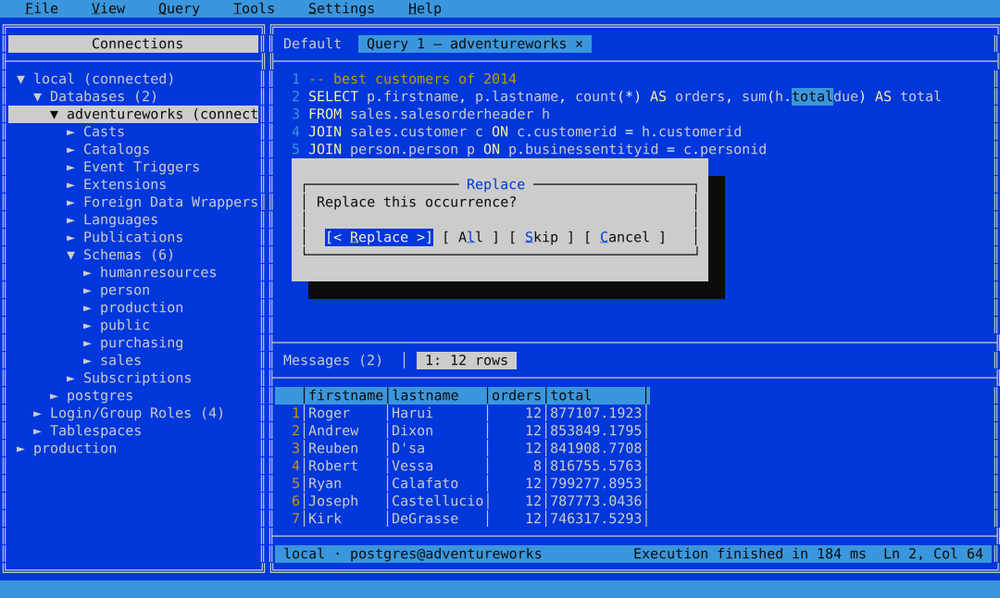
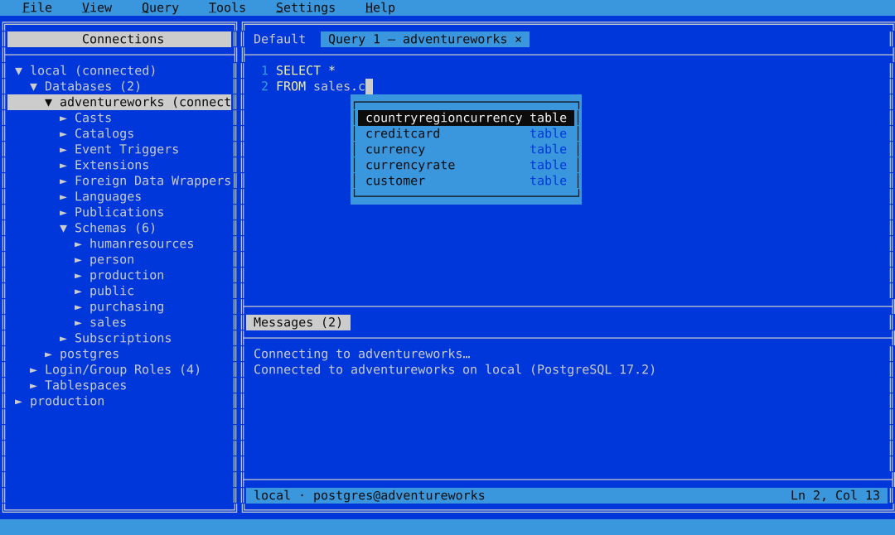
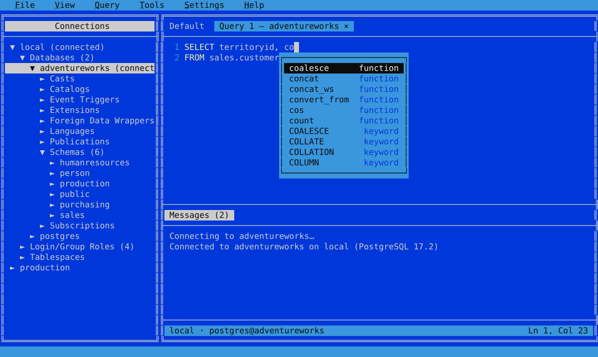

SQL editor and autocomplete
The editor widget of the query tabs: cursor movement, selection, editing, undo, find and replace, the clipboard, syntax highlighting — and autocomplete, which reads names from the system catalogs of the tab's database.
The editor is modeless and uses the conventional CUA key bindings. The same widget, read-only, shows object definitions and the statement text in the dashboard and the profiler; there the movement, selection, copy and find keys work and the editing keys are ignored.
Moving
| Key | Cursor movement |
|---|---|
| Left Right Up Down | One character / one line. |
| Ctrl+Left / Ctrl+Right | One word left / right. |
| Home | To the first non-blank character of the line; pressed again, to column 1. |
| End | To the end of the line. |
| PgUp / PgDn | One screen up / down. |
| Ctrl+Home / Ctrl+End | To the start / end of the text. |
The cursor position is shown at the right of the tab status row: Ln 3, Col 62. Line numbers are in
the left gutter; they are the numbers that LINE n: of an error message refers to
(Errors). With the mouse: a click places the cursor, the wheel scrolls.
Selecting
Shift with any movement key extends the selection:
| Key | Extends the selection |
|---|---|
| Shift + arrows | Character by character, line by line. |
| Ctrl+Shift+Left / Ctrl+Shift+Right | Word by word. |
| Shift+Home / Shift+End | To the start / end of the line. |
| Shift+PgUp / Shift+PgDn | A screen. |
| Ctrl+Shift+Home / Ctrl+Shift+End | To the start / end of the text. Second keys: Alt+Shift+Home / Alt+Shift+End. |
| Ctrl+A | Everything. |
| drag with the mouse | From the press position to the release position. |
A selection changes three commands: F5 sends only the selected text to the server; typing or pasting replaces it; Tab indents all its lines.
Editing
| Key | Action |
|---|---|
| Enter | New line. |
| Backspace / Delete | Deletes the character left / right of the cursor, or the selection. |
| Ctrl+Backspace / Ctrl+Delete | Deletes the word left / right of the cursor. |
| Ctrl+Y | Deletes the whole line. With a selection: every line the selection touches. The clipboard is not changed. |
| Tab | Inserts a tab character. With a selection: indents all selected lines. |
| Shift+Tab | Removes one level of indentation from the line, or from all selected lines. |
| Ctrl+Z | Undo. |
| Ctrl+Shift+Z or Alt+Shift+Z | Redo. |
- Indentation is a tab character (U+0009), displayed 4 columns wide; it is sent to the server and written
to files as a tab. The display width is
editor.tab_widthinsettings.toml. - Undo covers every change made in the tab, step by step, including replace-all and inserted templates.
- Ctrl+Y is delete line (as in Midnight Commander), not redo.
- Many terminals send Ctrl+Shift+Z as Ctrl+Z; use Alt+Shift+Z for redo there.
Copy and paste
| Key | Also | Action |
|---|---|---|
| Ctrl+C | Ctrl+Insert | Copy the selection. |
| Ctrl+X | Shift+Delete | Cut the selection. |
| Ctrl+V | Shift+Insert | Paste. |
A process in a terminal has no guaranteed access to the clipboard of the workstation — over SSH it runs on another host. pgtc therefore uses three mechanisms together:
| Mechanism | Available | Used for |
|---|---|---|
| Internal buffer | Always | Copy and paste inside pgtc. |
| System clipboard | When pgtc runs on the local machine (Windows, macOS, Linux with X11 or Wayland) | Copy and paste between pgtc and other programs. |
| OSC 52 — a terminal escape sequence | Over SSH, in terminals that implement it: Windows Terminal, iTerm2, kitty, WezTerm, Alacritty and others | Copy from pgtc on a remote host into the clipboard of the machine the terminal runs on. |
- Copy writes the text to the internal buffer, to the system clipboard if there is one, and — in an SSH session or without a system clipboard — to the terminal as an OSC 52 sequence.
- Paste with Ctrl+V reads the system clipboard; if there is none or it is empty, the internal buffer.
- Paste over SSH: use the terminal's own paste — Ctrl+Shift+V, the right mouse button, or whatever the terminal binds. pgtc enables bracketed paste, so the text arrives as one insertion, also when it has many lines.
- The system clipboard and OSC 52 can each be disabled in Settings.
Find and replace

Finding
- Press Ctrl+F.
- Type the text in Search for and press Enter (Find). The dialog closes and the first match after the cursor is selected.
- F3 jumps to the next match, Shift+F3 (or Alt+F3) to the previous one — with the same text and options, as often as you like.
| Option | Checked |
|---|---|
| Case sensitive | Total does not match total. Unchecked, the search is case-insensitive. |
| Whole words | total does not match totaldue. |
| Regular expression | The text is a regular expression: sales\.\w+ matches every name qualified with schema sales; ^\s*-- matches comment lines. In this mode Replace with may reference capture groups as $1, $2, …. |
Matching is per line: a match never spans a line break. If nothing matches, the status line says so.
Replacing
- Press Ctrl+F, fill in Search for and Replace with.
- Choose Replace to go through the matches one by one, or Replace all to replace every match at once.
- With Replace, pgtc stops at each match and asks:

Button Action Replace Replaces this match and goes to the next. All Replaces this and all following matches without asking. Skip Leaves this match and goes to the next. Cancel Stops. What was replaced so far stays replaced.
All changes of a replace can be undone with Ctrl+Z.
Syntax highlighting
The editor has its own lexer for PostgreSQL's SQL dialect. It classifies:
- keywords (
SELECT,FROM,CREATE, …, also the PL/pgSQL ones such asDECLARE,LOOP,RAISE); - string constants —
'text', escape stringsE'text\n'and dollar-quoted$$text$$/$tag$text$tag$; - numbers, operators;
- quoted identifiers —
"Order Items"; - comments —
-- to the end of the lineand/* between the marks */.
A dollar-quoted string after AS or DO — the body of a function, procedure or anonymous
code block — is lexed as code and highlighted as SQL. Any other dollar-quoted string, as in
SELECT $$some text$$, is highlighted as a string constant.
Highlighting is lexical only: the text is not parsed and nothing is validated; syntax errors come from the server at execution. The colours come from the colour scheme.
Large scripts
The buffer is built for very large texts — a plain-format dump of hundreds of megabytes opens and scrolls without delay. Only the visible lines are drawn and highlighted.
Autocomplete

c. — where c is the alias of sales.customer in the same
statement — the list offers the columns of that table.Autocomplete offers the object names of the tab's database: schemas, relations, functions, types and columns, read from the system catalogs through the query tab's own session. It is available in connected query tabs and in the SQL boxes of the developer template forms. It is a heuristic on the editor's lexer, not a SQL parser.
When the list opens
| How | When |
|---|---|
| Automatically | After typing a . and after the third letter of a word — only if there are candidates. |
| Ctrl+Space or Alt+/ | On request. Without candidates, the status line says No suggestions. |
Some terminals and operating systems intercept Ctrl+Space (input-method switching); Alt+/ is the alternative binding.
The list never opens inside a string constant, a comment or a quoted identifier. It does open inside the
dollar-quoted body of a function or DO block, which is code.
What the list offers
The context is the statement around the cursor — the text between two ; — and the tokens directly
before the cursor:
| Before the cursor | Offered | Example |
|---|---|---|
FROM, JOIN, UPDATE, INTO, TABLE, or a , in a FROM list | Schemas, and the tables, views, materialized views and foreign tables visible on the session's search_path | SELECT * FROM cus█ |
schema. | The relations, functions and types of that schema | FROM sales.c█ |
alias. or table. — a relation in the FROM / JOIN of this statement | The columns of that relation | SELECT c.█ FROM sales.customer c |
| anything else | The columns of the relations of this statement; relations and functions visible on the search_path; SQL keywords | SELECT territoryid, co█ |

sales.c: the tables of the schema that start with c.
co in the select list: functions, then keywords.- The typed prefix filters the list: a case-insensitive prefix match on the name.
- Each entry is labelled with its kind: column, table, view, function, schema, type, keyword, ….
- Order: columns, then relations, functions, schemas, types, keywords — each group sorted by name. An overloaded function is listed once.
Write the FROM clause first: with SELECT FROM sales.customer c in place, the select list
can already offer the columns.
Keys while the list is open
| Key | Action |
|---|---|
| Up / Down, PgUp / PgDn | Move in the list. |
| Enter or Tab | Replaces the typed prefix with the highlighted entry. |
| Esc, or a mouse click | Closes the list. |
| letters, Backspace | Edit the text as usual; the list is filtered again. |
| any other key | Closes the list and performs its normal action. |
Inserted text:
- keywords in UPPER CASE (
coalescetyped,COALESCEinserted); - identifiers as stored in the catalog, double-quoted only where required (the rule of
quote_ident):customer, but"Order Items".
Where the names come from, and when they are read again
- Objects are read with one query, once per query tab, when the list first needs them: schemas from
pg_namespace, relations frompg_class(tables, partitioned tables, views, materialized views, foreign tables, sequences), routines frompg_proc(functions, procedures, aggregates; no window functions), types frompg_type(base, composite, domain, enum, range and multirange types; no array types and no row types of relations). - “Visible” is what the server reports for the session:
pg_table_is_visible(),pg_function_is_visible(),pg_type_is_visible()— thesearch_pathin effect when the names are read. AfterSET search_path, refresh the tree to read them again. - Columns are read per relation, the first time it is used, from
pg_attributeinattnumorder (no system columns, no dropped columns); schema and relation name are passed as bind parameters. - Until the names arrive the list shows loading… and fills in when they do.
- The cache is dropped after the tab executes a
CREATE,ALTER,DROPorCOMMENT(detected by the command tag), and on Refresh in the object tree. DDL committed by another session is not noticed: refresh the tree. - The catalog queries do not check privileges: objects the role may not use are offered too.
- Schemas
pg_toast,pg_temp_nandpg_toast_temp_nare left out;pg_catalogobjects (built-in functions, system catalogs and views) are offered like all others.
While a statement is executing or its result is paused (more rows available), the tab's session is busy, so no catalog query can be sent. The list then offers what is cached, plus keywords; opened by key, the status line says that new names are read after the result ends. Press Alt+End to fetch all rows, or Alt+Shift+C to end the result.
Limits
Since there is no parser, output columns of a subquery or a WITH query (CTE) and unusual syntax
are not resolved: the list may offer nothing, or too much. Inside a function or DO body each statement
of the body is analysed on its own. Typing is never blocked by the list.